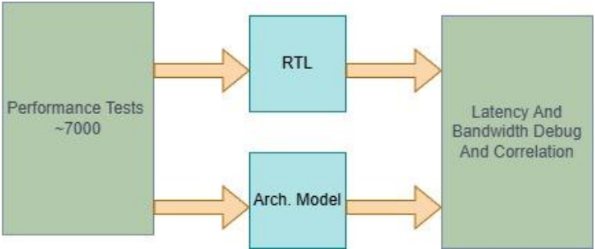
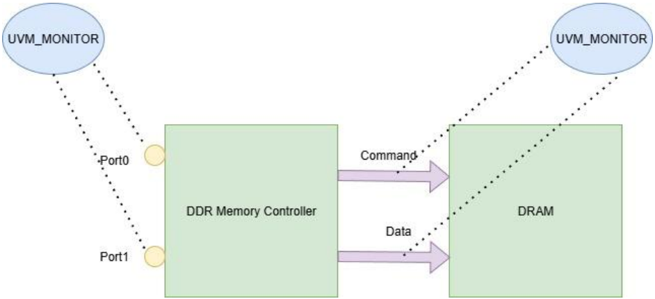
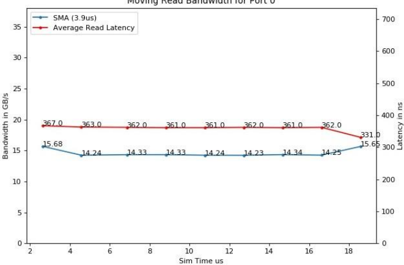
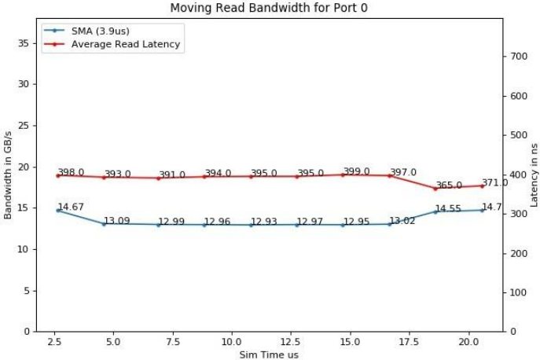
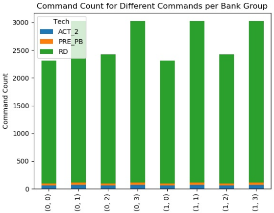
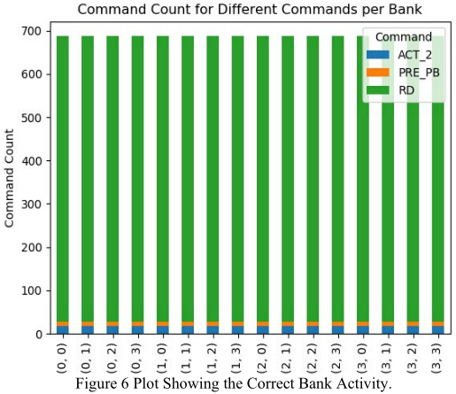
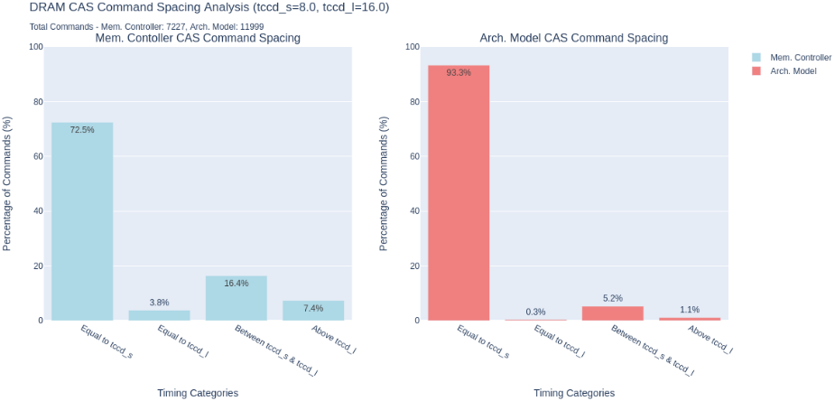
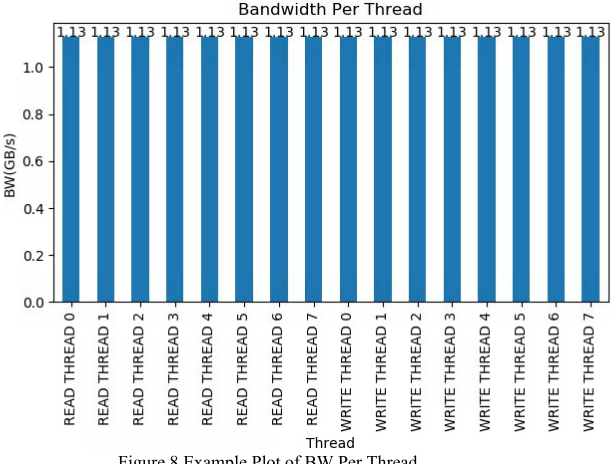

一种现代 debug 范式：面向 DDR Memory Controller 性能分析的 Python 可视化
该论文针对 DDR memory controller 性能验证中性能 bug 难以定位、传统波形 debug 慢且占用存储大的问题，提出以 Python 数据可视化作为主要 debug 辅助手段。方法是在仿真后阶段自动解析 UVM monitor 在 NoC 输入端口与 DRAM 接口生成的 CSV 日志及 architectural model 日志，生成移动带宽 SMA、per-bank 活动图、DRAM safe timing 直方图、每线程带宽等图表，用于定位带宽跌落时间戳、区分 stimulus 错误与设计问题、对比 RTL 与架构模型的调度参数差异。结果显示 debug 时间从平均 2-3 天缩短到约 10 分钟（约 99.3% 降低），单图仅 0.01 MB，远小于约 2 GB 的波形数据库；某调度差异场景从 4 天缩短到 1 天。论文同时指出这些图表不能完全取代波形，root cause 实际设计 bug 仍需波形。
DDR memory controller 的性能验证中，性能 bug 比 functional bug 更难定位（缺少 exhaustive checkers 和 assertions 提供的明确线索）；传统波形查看器在复杂设计下低效，生成波形耗时且占用大量磁盘空间。每个 controller IP 平均 7,000 个测试用例（覆盖不同 DRAM 类型 DDR*/LPDDR*、speed grade、地址访问模式、inline-ECC/加密等特性），RTL 仿真结果还需与 architectural model 结果在容差内比对，失败用例的 debug 周转时间成为瓶颈。
在 post-simulation 阶段用 Python 脚本自动解析 UVM monitor 在输入端口与 DRAM 接口生成的日志（input_port_0.csv、input_port_1.csv、ddr/lpddr_tracker.csv，含地址、读写类型、时间戳、DRAM command 及 row/bank/bank group/column 信息）以及 architectural model 的 DRAM activity log，自动生成 JPEG 图表并保存在测试运行目录：1) 移动带宽 SMA 图，定位带宽跌落的时间戳作为波形 debug 起点；2) per-bank 活动图，区分错误 stimulus/测试环境问题与设计问题；3) DRAM safe timing 直方图，对比 RTL 与架构模型实际选用的 CAS-to-CAS 等时序参数分布；4) 每线程带宽图，检查带宽是否被单一线程独占。已有脚本计算 latency、bandwidth、DRAM efficiency、平均读写切换等统计并与架构模型结果按预定义容差判 PASS/FAIL。脚本开发借助 AI 辅助编码工具快速原型化与迭代。
传统方式（仅靠波形或手动解析接口日志）平均需 2-3 天 debug；Python 可视化可在约 10 分钟内定位问题区域，debug 时间约降低 99.3%
每张图平均内存占用 0.01 MB，而传统波形数据库平均约 2 GB
DRAM safe timing 对比场景：原流程（生成并review波形）最多需 4 天，新流程（看图后直接带潜在 fix 重跑测试）需 1 天
每个 controller IP 平均 7,000 个测试用例，按 10% 失败率即 700 个用例需 debug，方法针对此回归规模设计
区别于依赖波形查看器或手动解析日志的传统 debug 方式，本文将 UVM monitor 已有日志经轻量 Python 后处理转为直观图表，作为性能 debug 的第一入口，并延伸到 RTL 与 architectural model 调度参数差异的可视化对比；方法不依赖外部可视化工具，图表体积极小（0.01 MB vs 波形库 2 GB），可自动嵌入 post-simulation 流程；同时利用 AI 辅助编码工具加速脚本开发，强调快速原型化。
相关度级别：high
命中能力域：2.4 设计验证方法学 | 2.7 EDA/验证自动化与 AI 辅助
理由：论文场景与团队高度重合：团队交付 LPDDR/DDR5/HBM4 等存储 IP，性能验证（latency/bandwidth/DRAM efficiency 指标、RTL 与 architectural model 容差比对）与大规模回归失败 debug 是日常工作内容。方法直接命中 2.4 的 debug 方法学（性能 bug 定位、回归 debug 效率），也命中 2.7 的验证流程自动化（Python 后处理脚本、post-simulation 自动出图）与 AI 辅助脚本开发；且实现轻量、复用已有 UVM monitor 日志、不依赖外部工具，落地门槛低，可作为团队可复用的 debug 自动化资产。
建议动作：深入精读并做内部分享
Pallavi Kumar，AMD，圣何塞
Michael Chan，AMD，圣何塞
摘要——对于验证工程师而言，无论是性能还是功能方面，传统的波形查看器一直是首选的调试辅助工具。然而，随着设计复杂度的不断提升，这些工具在深度分析时可能变得笨重且低效。此外，验证工程师经常反映，生成波形既耗时又需要大量磁盘空间。本文提出了一种新颖的 DDR 存储器控制器性能验证方法，即利用基于 Python 的数据可视化作为主要的调试辅助手段。通过从仿真输出中提取关键性能指标和信号行为，并以直观的图表加以呈现，能够更快、更深入地理解测试的行为。本文展示了该方法如何在特定场景下补充甚至取代传统波形，从而提供更具可扩展性和可定制性的验证流程。这种方法具有很强的现实意义，对于从事性能验证工作的人员来说更是如此，因为对性能下降问题进行根因分析犹如大海捞针，因此收集的数据点越多越好。本文列出了所有新增的基于 Python 的数据可视化，它们利用通用验证方法学（UVM）监视器打印的现有日志文件构建而成，并展示了这些可视化如何帮助精确定位问题区域。
现代片上系统（SoC）是通过利用各种互连层集成多个知识产权核（IP）而设计的。尽管器件的精确功能最为重要，但性能方面的正确行为也是一个关键因素 [1]。为了获得竞争优势，每一款流片的器件都应经过全面测试，以确保其满足所有要求的和已定义的性能指标。此外，优化器件性能并最大限度地降低风险，是在恰当的时机将产品推向市场的非常重要的方面 [2]。
在 SoC 中，验证存储器控制器和片上网络不是瓶颈至关重要。许多 SoC 性能验证团队通常将这些模块优先视为关键路径。因此，DDR 存储器控制器团队必须针对不同的 DRAM 存储器（DDR*、LPDDR*）、速度等级、地址访问模式（线性、随机）、特性（如 inline-ECC、加密）等运行全面的性能测试，并表征预期性能。这些排列组合使得每个控制器 IP 平均需要 7,000 个测试用例。更为复杂的是，寄存器传输级（RTL）仿真运行得到的测试结果应与在架构模型上运行相同测试所得的结果进行比较，并且两个模型之间性能指标的任何高于或低于规定裕量容差的差异都需要进行调试。性能缺陷比功能缺陷更难调试，因为对于功能缺陷，全面的检查器和断言能够提供明确的线索。
仅依靠波形或手动解析接口日志文件，调试平均需要两到三天时间。通过使用本文列出的后处理脚本，解析 UVM 监视器生成的日志文件可以极好地洞察测试的行为，有助于识别测试平台中的问题，并指出发生性能下降的问题区域。该脚本还可以解析由架构模型生成的日志文件，以生成类似的可视化结果，从而帮助更快地实现调试收敛。
借助 Python 的可视化可以在十分钟内精确定位问题区域，调试时间大约缩短了 99.3%。开发过程中使用了 AI 辅助编码工具来加速脚本开发，实现快速原型设计与迭代，因此关键在于提出想法。值得注意的是，任何正在进行功能验证或性能验证的 IP 或 SoC 验证团队，都可以从本文提出的想法中受益，从而提升调试效率和周转时间。
本节概述了 DDR 存储器控制器的性能验证方法。作为被测设计（DUT）的存储器控制器支持不同的存储器技术，例如双倍数据速率（DDR）和低功耗双倍数据速率（LPDDR）。性能验证的目标是确保 DDR 调度器能够跟上需求带宽，同时不损害 DRAM 效率 [3]。图 1 展示了存储器控制器的性能验证方法。现有两个 Python 脚本，其中一个在后仿真阶段读取 DRAM 接口和输入端口处由 UVM 监视器生成的日志文件，以计算延迟、带宽、DRAM 效率、平均读写切换等统计数据。另一个脚本随后将这些统计数据与架构模型结果数据库中的相应值进行比较，并根据预定义的容差限值将测试判定为 PASS 或 FAIL。基于这些通过/失败判定准则，即使这 7,000 个测试中仅有百分之十失败，也会有 700 个测试用例需要调试。因此，一种能够提供更快周转时间的调试辅助工具是必不可少的。

本节概述了 DDR 存储器控制器的测试平台（testbench）搭建方式，介绍了在输入和输出接口处添加的脚本，最后给出了一些示例图表与调试案例。
图 2 展示了 DDR 存储器控制器测试平台的简化示意图，其中展示了对性能验证有用的日志。测试平台有两个片上网络（Network on Chip，NoC）输入端口，DRAM 请求与响应经由这两个端口收发；输出端则是 DRAM，其类型可以是 DDR* 或 LPDDR*。测试平台中设有通用验证方法学（UVM）监视器，用于侦听在这两个接口上发送的事务。事务信息会被记录到名为 input_port_0.csv、input_port_1.csv 的文件中，在 DRAM 侧则记录到 ddr_tracker.csv 或 lpddr_tracker.csv 文件中。输入事务日志文件提供地址、事务类型（读/写）、时间戳等信息，而 DRAM 侧的 tracker 则提供所调度的 DRAM 命令类型以及行（row）、bank、bank group、列（column）信息。输入 tracker 文件有助于计算端口处达到的带宽和延迟值，而 DDR/LPDDR tracker 文件则用于计算 DRAM 各项指标。
Python 脚本的首要目标是提供一种直观的失败调试方式。有鉴于此，下表列出了所有这些脚本及其用途。
| Script | Input Files | Intent | Utility |
|---|---|---|---|
| plot_moving_bandwidth.py | input_port_*.csv files | Plots the simple moving average (SMA) of the read and write bandwidth seen on both the input ports over a pre-defined interval. For reads, an SMA of average latency is also generated | It is useful in debugging failing test cases that report less than expected bandwidth; the time where a bandwidth drop is seen can be inferred by viewing this plot |
| calculate_bw_from_csv.py | input_port_*.csv files | Visualizes the bandwidth seen per read/write thread at input ports | It is useful in debugging read/write testcases where this plot can easily flag bandwidth imbalances among the threads |
| plot_per_bank_activity.py | ddr/lpddr tracker.csv files | Plots the distribution of critical DRAM commands per bank, bank group pair | It is particularly useful to debug a linear test case with bank group interleaving enabled wherein every thread is expected to open two/four/eight bank groups |
| dram_timings_analysis.py | ddr/lpddr tracker.csv files Arch. m odel's ddr tracker files | Creates a histogram of the critical DRAM timing parameters, one per timing parameter, for memory controller and the architectural model | Histogram plots between the two models give an insight into the range of values the schedulers had to pick for a timing parameter and how often |
| Script | Input Files | Intent | Utility |

所有这些脚本都会在测试的仿真后阶段被自动调用，生成的图表以 .jpeg 格式保存在测试运行目录中。这些图表的内存占用平均为 0.01 MB。显然，除了这些图表所提供的诸多优势之外，其内存占用也很低，这使其成为一个颇具吸引力的选择。作为参照，传统波形数据库的平均内存占用约为 2 GB。
图 3 展示了一个执行线性访问模式的读主设备的简单移动平均（SMA），线性访问模式是效率最高的访问模式，会带来大量的页命中。正如预期的那样，在输入端口处观测到的带宽（刻度位于左侧坐标轴）保持稳定，延迟值（刻度位于右侧坐标轴）也十分平滑。另一方面，图 4 展示了一个在与图 3 相同的端口上执行随机访问模式的读主设备，这种模式可能混合出现页命中与页未命中。如果控制器性能不佳，利用该图可以轻松找出出现问题的时刻，并将调试工作向该方向倾斜。该图为我们提供了带宽在哪个时间戳出现下降的线索，随后在生成波形时可将该时间戳用作调试起点。在生成波形之前，还会查看本文所述的其他图表，以获取尽可能多的调试信息。


bank 活动图的开发目的是判断测试失败究竟是由于地址生成错误，还是测试平台（testbench）设置不当所致。如果 bank 活动图与预期相符，那么性能不匹配的原因很可能是设计问题。由于线性地址模式是可预测的，并且启用了 bank 组交织（interleaving），因此根据交织粒度的不同，每个读或写线程预期会打开两个/四个/八个 bank 组。图 5 是一个子系统线性测试的片段，该测试运行八个读主设备（read master）访问 DDR，并采用四个 bank 组交织，因此预期所有 32 个 bank 都应被访问到。但实际情况并非如此。该测试性能不佳，问题出在错误的激励上。只需查看该图即可完成此次调试，无需解析多个日志文件，也无需打开波形——而在子系统层面打开波形可能非常缓慢。图 6 展示了该测试修复后正确且符合预期的图形，图中命令地址选通（CAS）、预充电（PRE）和激活（ACT）的均匀性证明测试和调度器都在正确地工作。图中 X 轴表示 bank 组 / bank 对，Y 轴为命令计数。


提供对 RTL 与架构模型中的调度器在一次运行中所使用的实际时序参数的深入洞察，并对两个模型所使用的时序参数进行比较。该脚本以 ddr/lpddr 接口跟踪文件和架构模型的 DRAM 活动日志作为输入，生成一个直方图，显示为每个安全时序参数所选取的取值范围及其出现频率。图 7 所示为一个采用八个 bank 组交错的 DDR 线性写测试。该脚本针对此测试中使用的列地址选通（CAS）到列地址选通（CAS）的间隔生成了一个合并直方图，并将这些取值划分为四个区间：CAS 到 CAS 短间隔（=tCCD_s）、CAS 到 CAS 长间隔（tCCD_l）、介于两者之间以及大于 tCCD_l。从图中可以明显看出两个模型之间 CAS 调度的差异。这清晰地揭示了两模型之间的调度差异。基于对该图的分析，对不符合预期调度模式的模型进行微调，并重新运行测试。不同于生成波形并等待审查的方式，这里的测试已经带着潜在的修复方案重新运行完毕。前一种流程最多需要 4 天，而后者只需一天。

该图对于调试读/写比例测试非常有用，因为它有助于通过目视抽查来确认没有任何一个线程占用了全部带宽。图 8 展示了一个在 LPDDR 中以两个 bank group 交错方式运行的八读/写 50/50 线性测试用例的示例。该测试预计会出现一定的 bank “争用”，因为预计将被访问的 bank 数量为 16 个线程乘以 2 等于 32 个 bank，这是 LPDDR 中可用 bank 数量（16 个）的两倍。这意味着每个 bank 都有一个读线程和一个写线程在访问它。尽管在该测试中存在带宽被独占的可能性，但该图清楚地表明带宽在所有 master 之间是均匀分布的。

This paper presents a novel idea of using Python's visualization techniques to advantage by using the logs generated by the UVM monitor. These plots are more intuitive for debugging than the traditional waveforms. Sample plots shown from each script demonstrate their debugging power. They also consume very little disk space as opposed to the memory-heavy FSDBs, thereby making them a very viable option to consider. These plots are expected to become the new go-to debug tools. But despite their advantages, these plots do not replace traditional waveforms. To root cause the actual design bug, a waveform is still needed. This methodology does not rely on external tools for visualization. Instead, it uses lightweight Python scripts to generate intuitive plots, making it easy to adapt and integrate. DDR Memory Controller team has already seen a huge productivity boost in debug time with the aid of these plots and is actively working on proliferating this methodology to other teams.
1 条证据未在原文中核对到